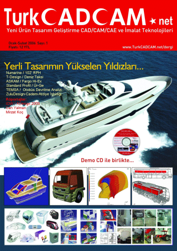
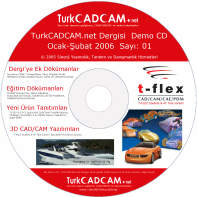

Modern
ürün geliþtirme araç ve teknikleri konusunda okuyucusunu bilgilendirerek
daha yenilikçi ve baþarýlý ürünleri kýsa sürde piyasaya çýkarma
yönünde Türkiye'nin global rekabetine yardýmcý olmayý hedefleyen
TurkCADCAM.net Dergisi, TurkCADCAM E-Posta Grubu ve TurkCADCAM.net
Portalý'ný tamamlayýcý/destekleyici bir içeriðe sahiptir;Not:
Yeterli abonelik, reklam veya sponsorluk desteði bulunamadýðý
için yayýnlanamayan 2. sayýmýzýn içeriði hakkýnda bilgi için
týklayýnýz
TurkCADCAM.net
Dergisi Ocak-Þubat 2006 Sayý: 1
Not:
Ön bilgi için, aþaðýdaki bazý baþlýklardan portalýmýzda yayýnlanan
ilgili sayfalara link verilmiþtir. Dergi'de basýlan asýl içerik
ise bundan farklý ve/veya daha kapsamlýdýr.
Röportaj:
IDW
ADesign 2005 Fuarý:
ZuluDesign
- Cadem A.Þ. - Atölye A.Þ. Standý:Ali Serdar Emre, Genel Md. Cadem A.Þ. T-Design
Standý: Murat Armaðan (Deniz
Taksi Projesi) Kilit
Taþý Tasarým Mimarlýk Ltd. StandýKunter Þekercioðlu Marmara
Üniv. Endüstriyel Tasarým Böl. Standý:Yaprak Büyükteoman (Bölüm ve proje birincisi) Tasarým
Ödülleri Ömer Ünal ve Zafer Uluçay'a verildi
Mirzat
Koç, Endüstriyel Tasarýmcý, IDEOLOG Erdinç
Karaüç, Karoseri Aksamý ve Ar-Ge Müdürü, ASKAM A.Þ.
(Fargo
Hi-Ex ürün geliþtirme baþarý hikayesi)
Numarine
A.Þ. (kapak konusu)
Muzaffer
Erdal Kýlýç, Genel Müdür, Numarine A.Þ. Can
Yalman, Endüstriyel Tasarýmcý, Can Yalman Tasarým
Standart
Profil A.Þ.'de kullanýlan ürün geliþtirme teknolojileri
Müfit
Çaðlayan, Ürün Geliþtirme Müdürü Okan
Kýzýl, Ürün Geliþtirme Md. Yard. Dr.
Tuncay Yüksel, FEA Uygulama Sorumlusu
Makale:
Patentlerle
ilgili þok edici anýlarým Fikri
mülkiyet haklarý Neden
patent stratejilerine dayalý Ar-Ge? Bilgisayar
destekli tasarým ve imalat (CAD/CAM) nasýl baþladý ve geliþti? Kuyumculuk sektöründe kalýp* artýk 3D Printer makineleriyle üretiliyor CAD/CAM ve hýzlý prototip imalat sistemlerinin kuyumculuk sektöründeki yeri ve kullaným alanlarý Otomobil gövde sýzdýrmazlýk elemaný tasarýmýnda sonlu elemanlar analiz yönteminin kullanýlmasý Perçin sistemlerinin parametrik tasarým programlarý yardýmý ile bilgisayar ortamýna tanýmlanmasý ve kuvvet analizi yapýlmasý: Mersin
Üniv. Tarsus T.E.F., Makine Eð. Böl. CNC kod standartlarý ve CAD/CAM-CNC entegrasyonunda yeni yaklaþýmlar Ortak çalýþma özellikli ara plakalý ardýþýk kalýp sistemleri (stack mold)
Uygulama
Örnekleri:
ZuluDesign ve proje ortaklarý ürün geliþtirme prosesi ve örnek çalýþmalar Ege Vitrifiye'de üç boyutlu optik sayýsallaþtýrma uygulamalarý Sonlu eleman yöntemi ile TÜVASAÞ vagonlarýnýn mukavemet hesaplarý CATIA V5 ile sanal ürün geliþtirme Pompa tasarýmýnda hesaplamalý akýþkanlar dinamiðinin kullanýmý ve uygulamalarý
LS-DYNA ile ECE-R66 Yönetmeliði'ne uygun otobüs devrilme analizi Plastik enjeksiyon simülasyonu
Konferans:
Uluslararasý
10. CAE konferansý Ýstanbul'da yapýldý: FÝGES A.Þ.
tarafýndan "Conference for Computer-Aided Engineering
and System Modeling with Exhibition" adý altýnda düzenlenen
konferansýn onuncusu, 14 - 15 Kasým 2005 tarihlerinde Swissotel
The Bosphorus, Ýstanbul'da gerçekleþtirildi.
TurkCADCAM
E-Posta Grubu Gündeminden:
Yerli
otomobil tasarým ve imalatý: Sektörden
5000'e yakýn üyesi olan TurkCADCAM e-posta Grubu'nda"
Yerli otomobil tasarým ve imalatý" konusu büyük ilgi
gördü ve bir ay içinde gruba deðerli görüþ ve bilgiler içeren
60'dan fazla mesaj gönderildi. Bu yazýda, ilgili görüþlerin
bir özetini aktarmak amacýyla, gönderilen mesajlarýn küçük
bir kýsmý bulunmaktadýr...
Demo
CD Ýçeriði:
Dergi'ye
Ek Dökümanlar
Numarine
52' Open ve 52' Fly modelleri;Tasarým ve Ýmalat Aþamalarý
(Video) Numarine
bünyesinde kullanýlan DIAB Infusion process: Vakum altýnda
reçine emdirme tekniði ile tekne gövdesi yapýmý... (Video)
T-Design
Deniz Taksi animasyonu (Video) Standard
Profil'de Ürün Geliþtirme Uygulamalarý (PowerPoint Sunum) TEMSA
/ LS-DYNA Otobüs Devrilme Simülasyonu (Video) Anadolu
ISUZU / CATIA V5 Uygulamalarý (PowerPoint Sunum) ASKAM
FARGO Hi-Ex tavan sac kalýbý simülasyonlarý (LS-DYNA - Form
2000 A.Þ.) (Video)
Eðitim
Dökümalarý
VIDEO
Silikon
Kalýplama, Vakum Döküm Eðitimi (Video)
SolidWorks 2D - 3D Modelleme UygulamasýAutoCAD Line komutu ve koordinat sistemleri (Video) *
SolidWorks Temel Montaj Bilgisi (MS Word Döküman) *
*Not: Bu eðitim videolarýný sorunsuz izleyebilmek için "TechSmith Screen Capture Codec " yüklemesi gerekebilir.
Yeni
Ürün Tanýtýmlarý
T-FLEX
Parametric CAD 9.0 yenilikleri (PowerPoint Sunum) T-FLEX
Parametric CAD-9.3 yenilikleri (MS Word Döküman) SprutCAM
Version 4.0 yenilikleri (PowerPoint Sunum) SURFCAM
TrueMill, SURFCAM Velocity yenilikleri (PowerPoint Sunum) CFdesign
tanýtýmý ve Pro/ENGINEER üzerinde pompa akýþ simülasyonu...
(Video) Delcam
/ PowerMILL 6.0 yenilikleri (MS Word Döküman) KREON
Zephyr Optik 3D tarama cihazý ile bir tarama uygulamasý INUS
/ RapidForm Tersine Modelleme Yazýlýmý (MS Word Döküman) Objet
Eden 330 3D Printer ve PolyJet otoinþa teknolojisi (Video)
Objet
Eden 330 3D Printer uygulama videosu (Video)
3D
CAD/CAM Yazýlýmlarý
T-FLEX
Parametric CAD Student Release 8.47 > Tam Sürüm! (Ek
lisans/onay iþlemi gerektirmeyen öðrenci versiyonu). Ýþletim
sistemi: Windows 2000/XP Gerekli alan: 140MB SprutCAM
4.0 Demo SürümüÝþletim sistemi: Windows 2000/XP Gerekli
alan: 120MB
Ýkinci
CD: Dergi'nin ekinde, infoTRON A.Þ. tarafýndan hazýrlanmýþ,
Dimension 3D Printer Cihazýný tanýtan ikinci bir CD de verilmektedir.
Reklam
Verenler: